KALECADCAD BİLGİ YARIŞMASI
CAD bilgini test et!
AutoCAD ve SketchUp sorularıyla her tur yeni bir meydan okuma.
Soru 1 / 10Puan: 0⏱ 15
Cevabından sonra sıradaki soru otomatik açılır.
🏁 Tur tamamlandı!
Bu tur0Doğru0Rekor0

AutoCAD ve SketchUp sorularıyla her tur yeni bir meydan okuma.
Cevabından sonra sıradaki soru otomatik açılır.